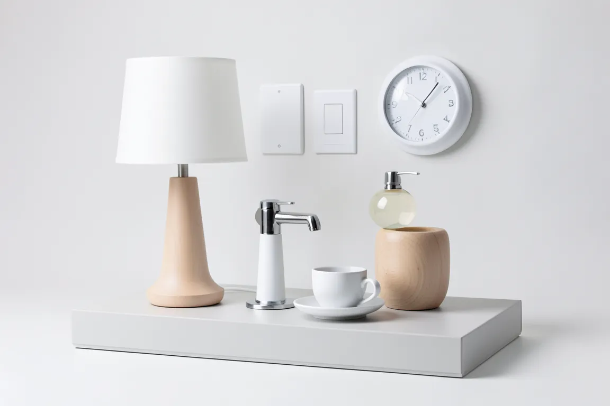

The anonymous everyday object: a chair, a clock, a kettle or a shelf in matte white plastic, pale wood and steel, drawn so that it looks right and leaves no trace of the designer.

Core thesis
A good object is one that nobody notices: it does its job, it fits the hand and the room, and it needs no explanation or signature.
Design principles
Draw the most usual form of the object; change a proportion by 5 to 10% and no more.
Use one matte colour on 90% of the surface: white, pale grey or the colour of the wood.
Round each edge with a radius of 2 to 6 mm so that the hand finds no sharp line.
Join the parts with a narrow gap of 1 to 2 mm; show no screw head on a main face.
Use one material for each part: pale wood for the frame, plastic for the shell, steel for the hardware.
Make the object for a long life: it uses standard parts and it ages without damage.
Print no logo and no ornament on the face of the object.